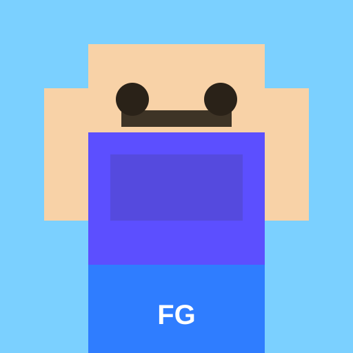

THUMBNAIL DESIGN✦MINECRAFT CONTENT✦YOUTUBE CREATOR✦THUMBNAIL DESIGN✦MINECRAFT CONTENT✦YOUTUBE CREATOR✦
Selected work
Designed for the
double take.
Every composition has one job: make your video feel like the one people need to open next.

FGEST. 2026
Behind the pixels
Built by a player
who gets the game.
I’m Arpit Yadav, a Minecraft player, creator, and thumbnail designer. I know the difference between a good-looking image and a thumbnail that makes a viewer curious enough to click.
From a wild SMP moment to a cinematic survival story, I build every design around the feeling your video deserves.
Let’s make something memorable →From the channel
Watch the
adventure unfold.
Open for collaborations
Got a big video idea?
Let’s make it click.
Need a Minecraft thumbnail with actual impact? Send over your idea and let’s bring it to life.